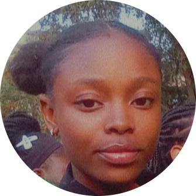

Nwamata Ogochukwu's Portfolio

Me:I'm passionate about God, Education and Data...
I'm Currently a Computer Science student of Covenant University. I aspire to Become a Great Woman of God, A Pedagogue in My field of Computer Science and A renowned Data Scientist
Aim:To fulfil God's purpose on earth. To impact my world through Tech-Ed[Education and Technology]
Motto: Building a Kingdom Legacy...
Education
- Primary Education: MARYLAND CONVENT PRIVATE SCHOOL
- Secondary Education: Babcock Academy
- Tietiary Institution: Covenant University
Work Experience
- Part time job as a cashier in a mobile money office : 1 year experience 2021/2022
- Extern Ambassador: August 2024 till date
Skills
- Computer Networking
- Internet Protocol
- Trouble shooting IP
- Data Analytics
- Analytical Landscape
- Data Science life cycle fundamentals
- Ethernet Specifications
- Data center
- Cloud concept
My Hobbies
Contact